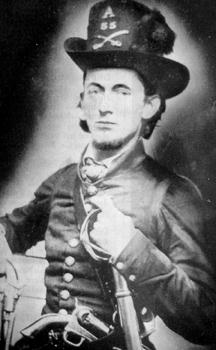

|

NAME: Nimrod Milton Green
BORN: 1827
DIED: 1882
ALLEGIANCE: Confederate
HIGHEST RANK: Private
UNIT: 4th Virginia Cavalry, Company H
RECORD: Enlisted in the 4th Virginia Cavalry on
April 25, 1861. Captured in Warrenton, Virginia, in November
1862 and exchanged for a Union prisoner. Captured at
Petersburg on April 2, 1865, and imprisoned at Point
Lookout, Maryland. Released on June 13.
|
|
Born in Paris, Virginia in 1827, Nimrod Milton Green
developed a passion for riding horses early in his life. By
the time he reached his twenties, he had become something of
a traveling man, riding to Georgia in 1852, to Tennessee and
Texas in 1853, and back to Georgia again in 1854. By 1858,
Green had settled in Warrenton, Virginia, and become a
constable. Tax records show that he owned one slave, three
horses, and twenty-nine head of cattle.
In 1859, Green became one of the original members of the
"Black Horse Troop," all of whom rode black horses and wore
black plumes in their hats. As part of the Virginia Militia,
the troop was called upon to guard the prison in Harpers
Ferry that held John Brown after his failed attempt to take
over the arsenal there. While in the town, in those days
before the birth of the Confederacy, Green had his picture
taken in full Black Horse uniform (left). Brown is said to
have admired the gentlemanly conduct of these young men from
Fauquier County.
When the Civil War started in April 1861, the troop
became part of the Confederate army and was assigned to the
4th Virginia Cavalry as Company H, commanded by Captain
Robert Randolph. Green himself enlisted on April 25 at
Warrenton. Less than three months later, Company H was held
in reserve during the First Battle of Manassas, almost crazy
with fear they would never see action. Their first combat
came the next day, when they took part in a cavalry charge
at Stone Bridge and pursued the fleeing Federals.
Though never wounded, Green was captured twice during the
war, first near Warrenton in November 1862. Then, on April
2, 1865, Green and many other Black Horse soldiers were
captured at Petersburg and taken to Point Lookout, Maryland.
He was released in June after taking the Oath of Allegiance
to the United States. Years later, a fellow cavalryman wrote
to Green's daughter: "They would join me in testimonial that
your father Nim Green, as we loved to call him, was one of
the best soldiers in the command." When the war ended, Green
married Amanda Wheatley and moved to Augusta County, where
he became overseer of the roads for Riverhead District. He
died of dropsy on February 21, 1882, at the age of 54.
Source: Civil War Times Illustrated
37:2 (May 1998), 80.
|